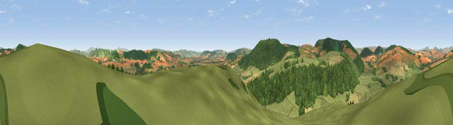

Clunbury Hill
#4634 in England · top 14% of its area beats it · near ClunburyThe view, rendered

A 360° render of this exact spot computed from the terrain model, tree cover and land cover — summer colours, afternoon light, calibrated against photographs of famous viewpoints. Real trees, hedges and buildings will differ in detail.
The panorama
Grey silhouette: terrain skyline in each direction (720 bearings, Earth curvature and refraction included). Dashed green: skyline with trees (+15 m) and buildings (+8 m) as obstacles. Blue strip: how far the ground is visible on each bearing.
Where the view opens
Wedge length = distance to the farthest visible ground on that bearing (vegetation-aware). Rings at 10, 25 and 50 km.
What fills the view
43% grassland · 34% woodland · 23% cropland
Angular shares of the visible panorama (visual magnitude), not map area. Landscape diversity 0.47 (0–1 Shannon).
Key numbers
More beautiful places nearby
The staircase of upgrades: each row has a higher view potential than everything closer. Driving times are estimates from straight-line distance, calibrated against real road routing — check an actual route before setting out.
| Place | Direction | Drive | Score |
|---|---|---|---|
| Viewpoint near Hopton Castle | SSW · 3 km | ~7 min | 79.3 |
| Viewpoint near Asterton | NNE · 9 km | ~18 min | 83.0 |
| The Lawley | NE · 22 km | ~36 min | 85.8 |
| Viewpoint near Little Wenlock | NE · 38 km | ~57 min | 86.6 |
| North Hill | SE · 52 km | ~73 min | 86.8 |
| Worcestershire Beacon | SE · 53 km | ~74 min | 87.1 |
| Viewpoint near Bossington | SSW · 139 km | ~162 min | 88.3 |
| Selworthy Beacon | SSW · 139 km | ~163 min | 88.7 |
52.41201, -2.92579 · source: dobih hill · position refined by local search. Computed location — check access rights before visiting.